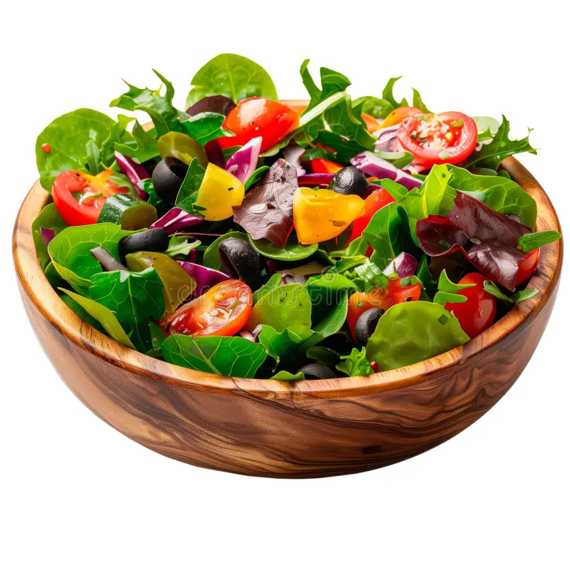
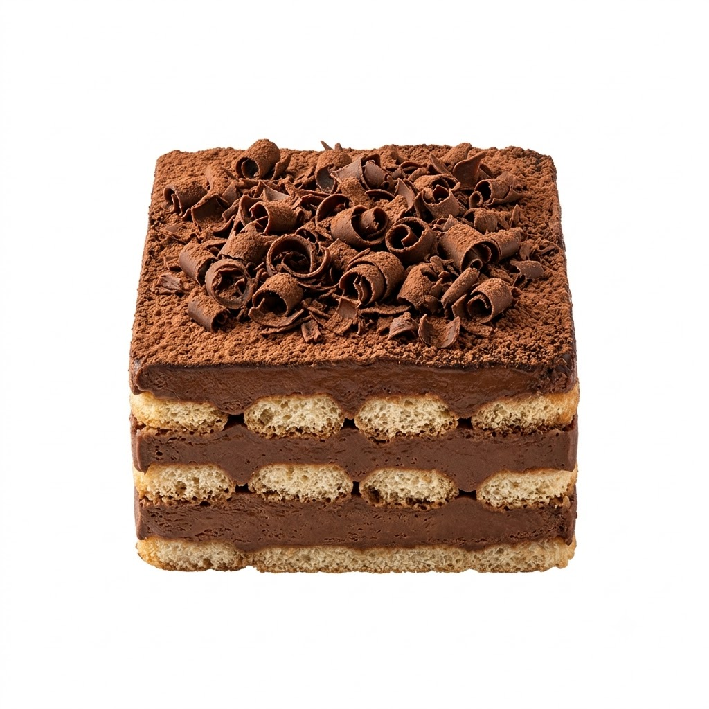
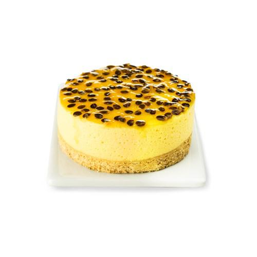

Meu primeiro post
Por: Maria E. Provin
Boas-vindas ao meu novo blog! Aqui vou compartilhar receitas que estão viralizando no momento.
Por: Maria E. Provin
Boas-vindas ao meu novo blog! Aqui vou compartilhar receitas que estão viralizando no momento.

Ingredientes da salada
2 xícaras de chá de alface americana picada (1 cabeça pequena)
1 xícara de chá de tomate-cereja cortado ao meio
½ cebola roxa picada
½ pepino ralado
Salsinha picada a gosto
Ingredientes do macarrão
200 g de macarrão gravata (farfalle)
1 colher (sopa) de azeite
1 colher (chá) de páprica doce
½ colher (chá) de alho em pó ou 1 dente de alho bem picado
Sal e pimenta-do-reino a gosto
Ingredientes do molho
4 colheres (sopa) de creme de leite
1 colher (sopa) de suco de limão
1 colher (sopa) de água
1 colher (sopa) de mostarda
Sal e pimenta-do-reino a gosto
Modo de preparo
1. Cozinhe o macarrão em água com sal até ficar al dente.
2. Coloque o macarrão em uma tigela e misture com: azeite, páprica, alho, sal e pimenta. Mexa bem para envolver todos os pedaços.
3. Coloque o macarrão na air fryer a 200 °C por cerca de 8 minutos, até ficar dourado e crocante.
4. Em uma tigela grande misture: alface, tomate, cebola roxa, pepino e a salsinha.
5. Misture a maionese, o limão, a água, a mostarda, sal e pimenta até formar um molho cremoso.
6. Coloque a salada em uma tigela, espalhe o macarrão crocante por cima e finalize com o molho, e misture bem.
7. Sirva imediatamente para manter o macarrão bem crocante.

Ingredientes
3 colheres (sopa) de Leite em pó Zero Lactose
1 xícara e meia (chá) de água
1 caixinha de Leite Condensado Zero Lactose
3 colheres (sopa) de Chocolate em Pó 50%
1 colher (sopa) de amido de milho
1 lata de Creme de Leite Zero Lactose
1 pacote de biscoito tipo champanhe
Granulado sem lactose para decorar
Modo de preparo
1. Em um recipiente, dilua o Leite em pó na água e reserve.
2. Em uma panela, misture o Leite Condensado, metade do Leite em pó, o Chocolate em Pó 50% e o amido de milho e leve ao fogo baixo, mexendo sempre até obter uma mistura cremosa.
3. Retire do fogo e junte o Creme de Leite. Reserve.
4. Umedeça os biscoitos no Leite em pó restante e coloque-os, um ao lado do outro em um recipiente refratário retangular (16 x 26 cm).
5. Cubra com um pouco do Creme de Chocolate. Coloque outra camada de biscoitos umedecidos e outra de Creme de Chocolate.
6. Decore com o granulado e polvilhe o açúcar de confeiteiro
7. Leve à geladeira por cerca de 6 horas e sirva a seguir.

Ingredientes da base
1 pacote de biscoito maizena (mais ou menos 200g).
100g de manteiga derretida.
Ingredientes do recheio
1 lata de leite condensado (395g).
1 caixa de creme de leite (200g).
1 xícara de chá (240ml) de suco de maracujá concentrado, coe bem pra tirar as sementes.
1 envelope de gelatina incolor sem sabor (12g), hidratada em 3 colheres de sopa de água fria.
Modo de preparo da base
1. Triture os biscoitos no liquidificador até virar uma farofa fina.
2. Junte a manteiga derretida e bata só o suficiente pra misturar tudo.
3. Transfira essa mistura pra uma forma de fundo removível (24cm é ideal), já untada com manteiga e farinha. Espalhe bem com a espátula e depois aperte com as mãos, cobrindo o fundo e subindo um pouquinho pelas laterais.
4. Leve ao forno pré-aquecido a 160°C por uns 10 minutos. Só pra dourar levemente.
Modo de preparo do recheio
1. Enquanto a base esfria, prepare o recheio. No mesmo liquidificador, bata o leite condensado, o creme de leite e o suco de maracujá por uns 2 minutos, até ficar bem homogêneo..
2. Dissolva a gelatina hidratada em banho-maria ou no micro-ondas por 20 segundos, só o tempo de ela virar líquido. Despeje no liquidificador e bata mais uns 30 segundos, isso vai firmar a mousse sem deixar gosto de borracha.
Montagem final
1. Com a base morna ou em temperatura ambiente, despeje o recheio devagar.
2. Cubra com papel-filme e leve à geladeira por pelo menos 4 horas.
3. Decore com polpa de maracujá fresca por cima.
Ingredientes da salada
2 xícaras de chá de alface americana picada (1 cabeça pequena)
1 xícara de chá de tomate-cereja cortado ao meio
½ cebola roxa picada
½ pepino ralado
Salsinha picada a gosto
Ingredientes do macarrão
200 g de macarrão gravata (farfalle)
1 colher (sopa) de azeite
1 colher (chá) de páprica doce
½ colher (chá) de alho em pó ou 1 dente de alho bem picado
Sal e pimenta-do-reino a gosto
Ingredientes do molho
4 colheres (sopa) de creme de leite
1 colher (sopa) de suco de limão
1 colher (sopa) de água
1 colher (sopa) de mostarda
Sal e pimenta-do-reino a gosto
Modo de preparo
1. Cozinhe o macarrão em água com sal até ficar al dente.
2. Coloque o macarrão em uma tigela e misture com: azeite, páprica, alho, sal e pimenta. Mexa bem para envolver todos os pedaços.
3. Coloque o macarrão na air fryer a 200 °C por cerca de 8 minutos, até ficar dourado e crocante.
4. Em uma tigela grande misture: alface, tomate, cebola roxa, pepino e a salsinha.
5. Misture a maionese, o limão, a água, a mostarda, sal e pimenta até formar um molho cremoso.
6. Coloque a salada em uma tigela, espalhe o macarrão crocante por cima e finalize com o molho, e misture bem.
7. Sirva imediatamente para manter o macarrão bem crocante.